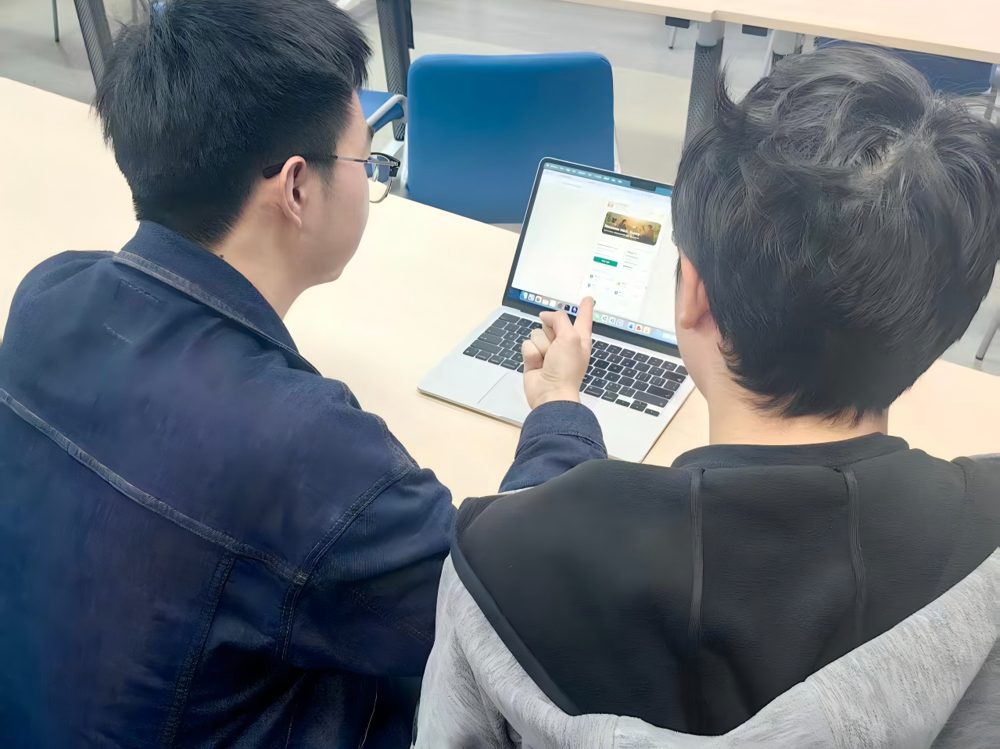
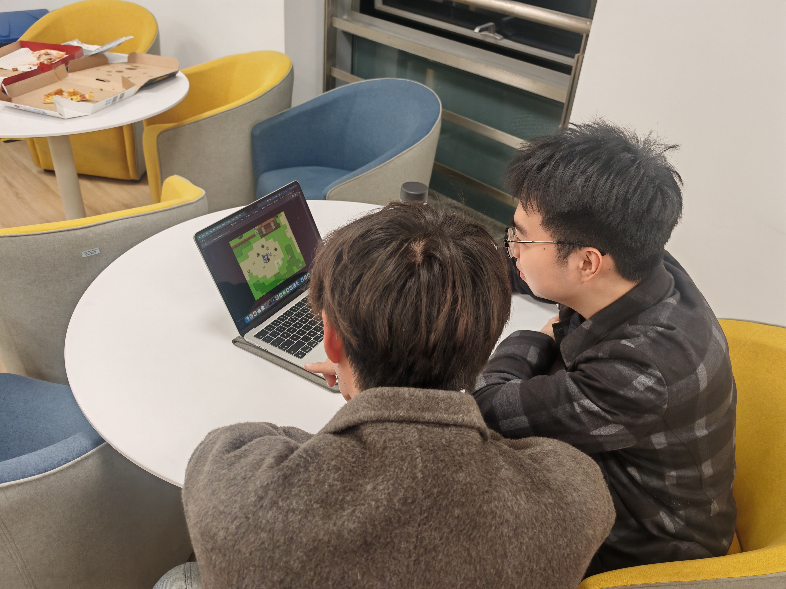
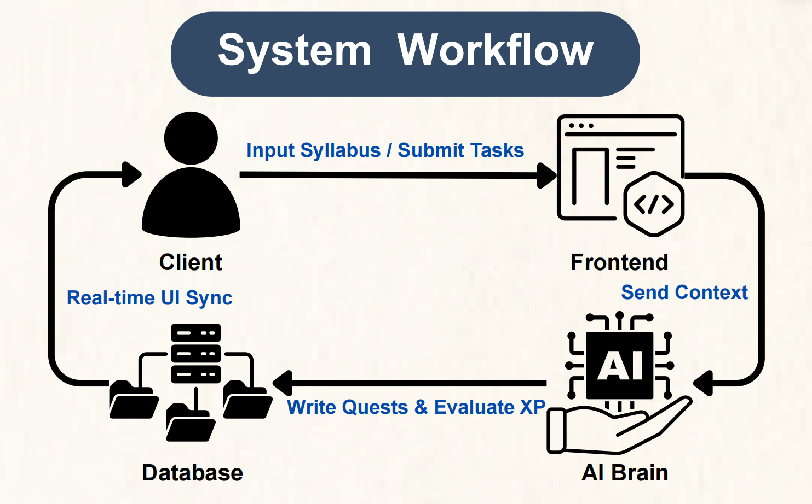
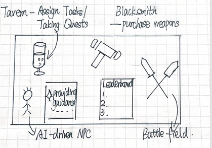
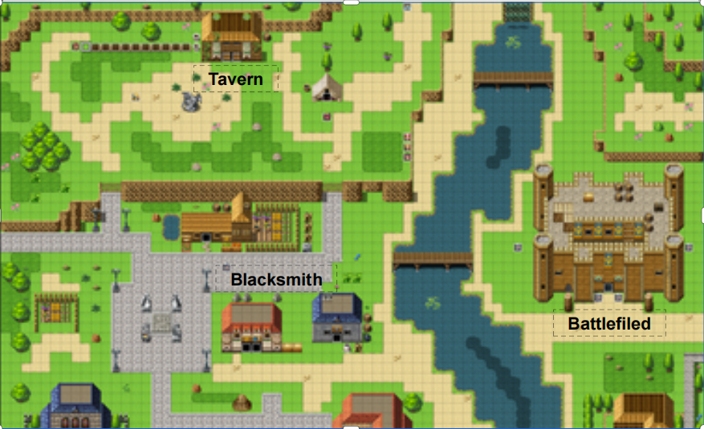
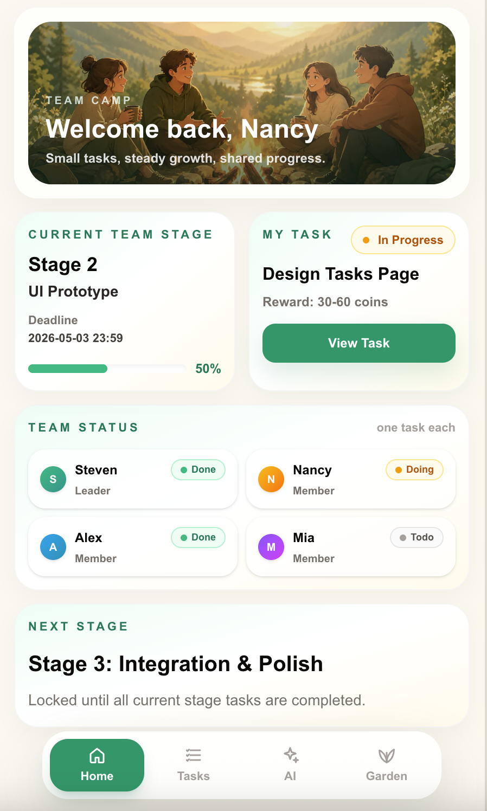

SyncValley A Gamified Platform for Engaging Group Dynamics
SyncValley transforms student group work into a cozy pixel-art RPG experience. It is designed to reduce the free-rider problem by combining AI-assisted task breakdown, quest-based collaboration, visible contribution tracking, and playful rewards that make teamwork fairer, clearer, and more motivating.
Yongke Yang
ID: 2360840
Contribution
UI design
Yankun Luo
ID: 2363647
Contribution
Back-end development, coding
Kaiyi Xu
ID: 2361410
Contribution
Content design
Yiming Ye
ID: 2360720
Contribution
Testing, coding
Why We Chose the Social Track
We chose the social track because unfair participation in student teamwork is a common and emotionally stressful issue in university life. In many group projects, some students contribute actively while others remain passive, delay communication, or only participate near the deadline. This “free-rider” problem creates resentment among committed members, weakens team trust, and often makes collaboration feel more like conflict management than shared learning.
The problem is also complex because passive participation does not always come from laziness. Some students may feel overwhelmed, uncertain about what to do, anxious about communicating, or disconnected from the project. Therefore, simply exposing low contribution is not enough. A meaningful design response should help students understand their tasks, feel encouraged to participate, and recognise progress before the project reaches a crisis point.
SyncValley responds to this challenge by combining practical project coordination with playful motivation. Through a pixel-art RPG metaphor, the platform makes collaboration feel less intimidating. Through AI task breakdown, it turns vague project goals into manageable quests. Through contribution visibility and progression rewards, it supports fairer participation while keeping the experience supportive rather than punitive.
Unequal Workload
Active members often carry extra tasks when others disengage.
Late Intervention
Teams usually discover contribution imbalance too close to the deadline.
Unclear Tasks
Students may become passive when responsibilities are vague or overwhelming.
Low Motivation
Traditional task boards may track work but rarely make collaboration engaging.
What Existing Research and Products Still Miss
To identify design opportunities for SyncValley, we reviewed both academic papers and commercial collaboration products. Instead of separating them into many repeated examples, we synthesised the overlap between both categories into a smaller set of key findings.
Across academic papers and commercial products together, three strengths appeared consistently: they provide structure, communication support, and some level of accountability. However, three major gaps also remained: they rarely combine emotional support, playful motivation, and fair low-pressure contribution visibility in one student-friendly experience.
Finding 1 — Structure vs. Emotional Accessibility
- Did well: many papers and tools helped organise tasks, roles, and project milestones clearly.
- Missed: they rarely reduced the anxiety and emotional pressure that students often feel in group work.
Finding 2 — Accountability vs. Motivation
- Did well: existing systems often supported monitoring, peer assessment, or visible records of participation.
- Missed: they provided limited playful motivation or rewarding feedback that could sustain engagement over time.
Finding 3 — Guidance vs. Shared Team Experience
- Did well: some solutions offered useful communication channels or AI/task guidance for completing work.
- Missed: few connected task clarity, contribution visibility, and supportive social dynamics into one shared collaborative experience.
Primary and Secondary Users
We developed personas to represent two important types of students in group projects. One user type is proactive and often takes responsibility for moving the team forward, but becomes frustrated when others do not contribute fairly. The other user type may be willing to help but becomes passive when the project feels unclear, stressful, or too large.
These personas helped us avoid designing only for high-performing students. SyncValley needs to support active contributors while also helping less confident teammates join the workflow through clearer tasks, visible progress, and lower-pressure interaction.

Playful Design Requirements
From research and journey mapping, we defined three core design requirements. These requirements helped us evaluate whether the platform was not only functional, but meaningfully playful and socially supportive.
Thematic Visual Metaphors
The interface must replace traditional, stressful academic terminology (e.g., “Syllabus,” “Deadlines”) with immersive RPG elements like “Taverns,” “Quests,” and “Boss Battles” to reduce cognitive load and academic anxiety.
Instant Positive Reinforcement
The system must mirror the gratification loops of gaming by providing immediate, tangible rewards—such as AI-evaluated XP drops, virtual gold, and leveling up—the exact moment a user submits a task.
Cooperative Social Dynamics
The platform must facilitate non-punitive, engaging peer interactions. Instead of toxic warning lists, it must use mechanics like collaborative “Damage Leaderboards,” a “Like/Praise” button, and growing “Contribution Trees” to make teamwork feel like a shared adventure.





Alternative 1 — Productivity Dashboard
Strong for organizing deadlines and task lists, but too similar to existing tools and not playful enough to address motivation.
Alternative 2 — AI Chatbot Assistant
Useful for answering questions and generating suggestions, but weaker in shared visibility and team-wide progression.
Alternative 3 — Pixel RPG Collaboration
Selected direction. It connects AI guidance, quests, contribution tracking, rewards, and a memorable pixel-art experience.

Prototype and Core Flow
The prototype demonstrates the core SyncValley experience: joining a project space, viewing a shared adventure, receiving task suggestions, accepting quests, tracking progress, and seeing contribution feedback. The interface uses a cozy pixel-art visual style to reduce the pressure normally associated with project management tools.


Testing, Iteration, and Ethical Reflection
We tested the alpha prototype with student participants using scenario-based tasks. Participants were asked to understand the project space, interpret the quest system, identify contribution feedback, and explain how the platform might affect their motivation in real group work.
Feedback showed that the RPG metaphor was memorable and made collaboration feel less intimidating. Users especially liked the idea of turning large assignments into smaller quests. However, some participants were initially unsure how rewards were calculated and how contribution indicators should be interpreted. In response, we simplified labels, improved onboarding explanations, and made progress states more visible.
The project also raised important ethical considerations. Contribution tracking must be designed carefully to avoid over-surveillance, public shaming, or unfair judgement. AI should support task clarity and reflection, but it should not replace human communication or become the only authority on whether someone has contributed fairly. Therefore, SyncValley frames AI as a supportive guide rather than a final evaluator.
What Worked
The playful RPG theme made the concept memorable and helped users feel that teamwork could be more engaging.
What Needed Improvement
Users needed clearer explanations of reward rules, contribution status, and AI-generated task suggestions.
Iteration Focus
We improved onboarding, refined progress labels, and made contribution feedback more transparent and less punitive.
